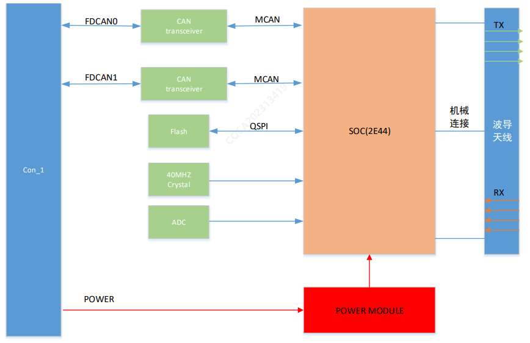

Принципиальная схема системы

Радарная система миллиметрового диапазона переднего обзора является одним из датчиков функций помощи при вождении. Основные функции приведены ниже:
Вывод информации о движущихся объектах спереди/сбоку от автомобиля, распознанных радаром: легковые автомобили, грузовые автомобили, двухколесные транспортные средства, пешеходы
Вывод информации о неподвижных объектах спереди/сбоку от автомобиля, распознанных радаром: тип неподвижного объекта не определяется, передаются вероятность преодоления препятствия и информация о высоте над землей
Вывод информации о свободной зоне движения Freespace по неподвижным препятствиям спереди/сбоку от автомобиля, распознанным радаром: стены, столбы, водоналивные барьеры, конусы, неподвижные транспортные средства и т.д.
Вывод информации о металлических ограждениях, распознанных радаром спереди/сбоку от автомобиля